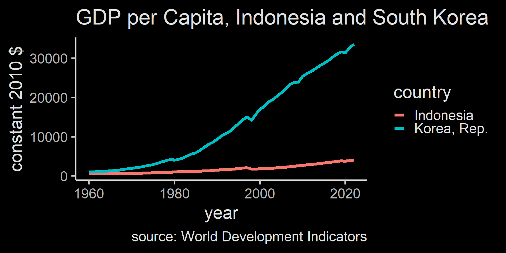
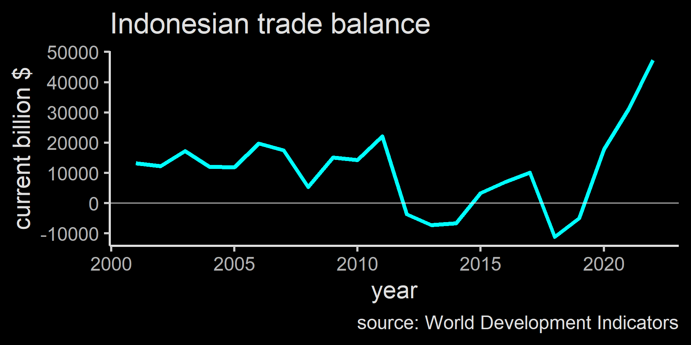
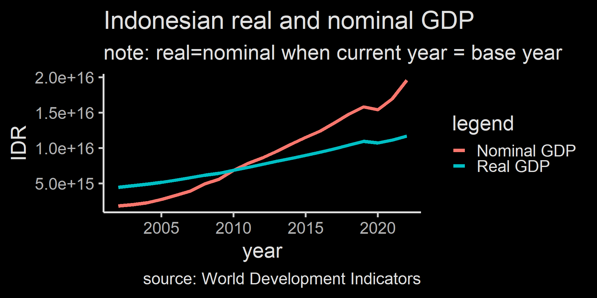
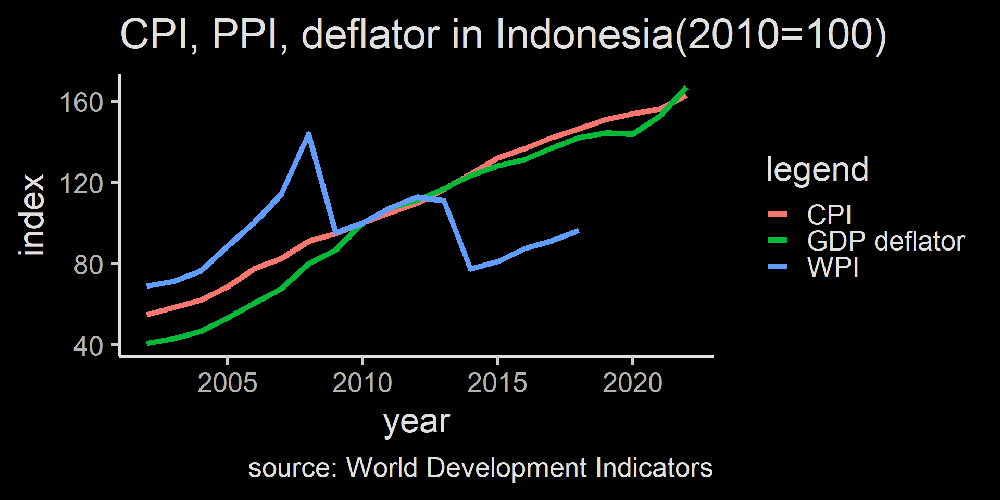

Ilmu Ekonomi
Pertemuan 4
Prodi PIWAR Politeknik APP Jakarta
What is a macroeconomics?
We have discussed how consumer and producer makes decision: this is part of a branch of economics called microeconomics.
As a (small) economic agent, we make decisions based on cost and benefit. But as an aggregate, our actions will affect the whole economy.
Macroeonomics is the study of aggregate actions of economic agent: The economy is more than the sum of its parts.
Paradox of thrift
When a firm and a household worry about the prospect of the future, they save and cut spending and investment.
But when all households and firms do this, there will be slowdown in consumption and capital expenditure:
some firms may even reduce their long run output by lowering capital and employment.
And when this all snowball, the ‘worry about the prospect of the future’ become reality: a self-fulfilling prophecy.
The emergence of macroeconomics
Macroeconomics is relatively new. Many consider John Maynard Keynes as the father of macroeconomics study.
Many economist before 1930s generally study microeconomics. Economic policy prior to 1930 was relatively self-regulating.
The Great Depression in 1930 changes this: Keynesian economics argue that the government can interfere to avoid economic crisis.
The emergence of macroeconomics
Keynesian economics brings the importance of monetary policy by the central bank, and fiscal policy by the government into economic recovery.
With the emergence of the importance of government, macroeconomic studies attract huge attention from governments around the world.
It is also important for firms: by analyzing government’s possible move, firms can react accordingly.
Macroeconomic indicators
Some of the most important issue for macroeconomists are long run economic growth, business cycle, unemployment, inflation and trade balance.
All of those issues are important for people’s welfare.
We will go through indicators that we look at to analyze these issues.
Long run economic growth
What is important to people in general is access to goods and services.
It is impractical to watch all possible goods and services, so we aggregate them into one indicator.
We measure economic activity with Gross Domestic Product (GDP).
- Calculating GDP in detail is covered in accounting.
Long run economic growth
Long run economic growth indicates how rich the general population of a country becomes.
As economy of a country grows, its people get more access to goods and services.
- on the other hand, recession causes misery to everyone.
eg, only 50% Indonesians has access to electricity in 1990. Today it’s almost 100%.
Economic growth can also be an indicator for business to investment opportunities.
South Korea was as poor as Indonesia in 1950s

Business cycle
While economy in the long run generally grows, it has a small ups and downs in the short run.
This ups and downs give information on how economy in the long run will run.
This is the feature of economy: Sometimes business reach its peak and slowing down.
We generally are not worry when it’s a business cycle peak, but recession is where the government needs to interfere.
Employment
Since business employs people, business cycle tends to be followed by employment cycle.
We use unemployment rate as an indicator.
These days, the approach toward employment is rather mixed: some stimulate economy for business, some others provide various benefits to unemployed.
But in the end a state’s main role is to keep its people have access to various goods and services.
Inflation and deflation
inflation is the overall rise of price level, deflation is the overall decrease of price level.
In the firm and consumer level, we usually compare price changes relative to other goods.
- for example, we discussed how iPhone remains competitive even though it is more expensive than other phones.
However, most goods and services tends to have increased level of price.
Rise in wage \(\rightarrow\) rise in inflation \(\rightarrow\) rise in wage.
Inflation
Inflation tend to happen during the peak business cycle, while deflation happens during the recession
- We often hate inflation but it can be an indicator of thriving economic activity
Inflation leads to distrust over cash because cash lost its value rather quickly (like 1998)
Deflation is the opposite: people tends to save because it will be more valuable, which may leads to less economic growth.
Trade balance
Indonesia is a (somewhat) open economy: we trade with other states.
Indonesia generally runs trade surplus where it has more exports than imports.
You might have heard about how Indonesian government despise trade deficit and starting to say bad things about import.
In reality, trade deficit doesn’t mean a bad thing. Trade deficit means a country invests more than it saves.
Indonesia’s trade balace

Summary
Macroeconomics learn the economy as a whole since the government can help with economic cycle using fiscal and monetary policy.
issues include economic growth, business cycle, unemployment, inflation, and trade balance.
We will learn more about indicators on these macroeconomic phenomena and what institution govern them, and how.
Gross Domestic Product (GDP)
A measure of economic activity is essentially how much goods and services are produced.
But we cannot aggregate something with different units:
- What is palm oil+coal+oil+cars?
- we can’t compare Indonesia’s production with other countries’.
We transform all of those production of goods and services to currency and essentially calculates price \(\times\) quantity.
GDP
GDP is the total value of all final goods and services produced in an economy during a given period, usually a year.
Understanding how it calculates help you to figure out if GDP is the correct measure for you to use.
There are 3 general ways to calculate GDP:
- Adding up total value of the final products.
- Adding up total spending of domestic products.
- Adding up total factor payment.
GDP Accounting illustration
GDP in this economy is 21,500
| Value of sales |
4,200 (ore) |
9,000 (steel) |
21,500 (car) |
- |
| Intermediate goods |
0 |
4,200 (ore) |
9,000 (steel) |
- |
| Wages |
2,000 |
3,700 |
10,000 |
15,700 |
| Interest payments |
1,000 |
600 |
1,000 |
2,600 |
| Rent |
200 |
300 |
500 |
1,000 |
| Profit |
1,000 |
200 |
1,000 |
2,200 |
| Total expenditure by firm |
4,200 |
9,000 |
21,500 |
- |
| Value added per firm = value of sales - cost of intermediate goods |
4,200 |
4,800 |
12,500 |
- |
1. GDP by Final Product
GDP in this economy is 21,500
| Value of sales |
4,200 (ore) |
9,000 (steel) |
21,500 (car) |
- |
| Intermediate goods |
0 |
4,200 (ore) |
9,000 (steel) |
- |
| Wages |
2,000 |
3,700 |
10,000 |
15,700 |
| Interest payments |
1,000 |
600 |
1,000 |
2,600 |
| Rent |
200 |
300 |
500 |
1,000 |
| Profit |
1,000 |
200 |
1,000 |
2,200 |
| Total expenditure by firm |
4,200 |
9,000 |
21,500 |
- |
| Value added per firm = value of sales - cost of intermediate goods |
4,200 |
4,800 |
12,500 |
- |
We add all value added. In the ore firm, its value add=sales. But in other firms, intermediate inputs need to be subtracted from their final sales to avoid double counting. Steel buy iron ore and car buy steel. \(GDP=4,200 + 4,800 + 12,500=21,500\)
2. GDP by total spending on domestic goods
GDP in this economy is 21,500
| Value of sales |
4,200 (ore) |
9,000 (steel) |
21,500 (car) |
- |
| Intermediate goods |
0 |
4,200 (ore) |
9,000 (steel) |
- |
| Wages |
2,000 |
3,700 |
10,000 |
15,700 |
| Interest payments |
1,000 |
600 |
1,000 |
2,600 |
| Rent |
200 |
300 |
500 |
1,000 |
| Profit |
1,000 |
200 |
1,000 |
2,200 |
| Total expenditure by firm |
4,200 |
9,000 |
21,500 |
- |
| Value added per firm = value of sales - cost of intermediate goods |
4,200 |
4,800 |
12,500 |
- |
We calculate only the final value/sales of the final product. In this case, it’s car, because iron ore and steel are used to make car. This is to avoid double counting. GDP=car sales=21,500
3. GDP by factor payment / Income
GDP in this economy is 21,500
| Value of sales |
4,200 (ore) |
9,000 (steel) |
21,500 (car) |
- |
| Intermediate goods |
0 |
4,200 (ore) |
9,000 (steel) |
- |
| Wages |
2,000 |
3,700 |
10,000 |
15,700 |
| Interest payments |
1,000 |
600 |
1,000 |
2,600 |
| Rent |
200 |
300 |
500 |
1,000 |
| Profit |
1,000 |
200 |
1,000 |
2,200 |
| Total expenditure by firm |
4,200 |
9,000 |
21,500 |
- |
| Value added per firm = value of sales - cost of intermediate goods |
4,200 |
4,800 |
12,500 |
- |
We calculate only income from everyone who owns factor of production: workers, capital owners, savers, and entrepreneurs. \(GDP=15,700+2,600+1,000+2,200=21,500\)
Calculating GDP
Most countries calculate using method 1 and 2.
In Indonesia, Calculating GDP is BPS’ job. Method 1 is called PDB Lapangan Usaha, while method 2 is called PDB Pengeluaran
GDP shows us the economic size of a country. However, it’s not perfect.
Main reason is because the economic value is measured by price.
Problem with GDP
It discount economic activity that has no price. A two stay-at-home-mum A and B produce nothing. But if mum A pays mum B $100 to take care of her child and mum B pays mum A $100 to take care f child B, both generate $200 to the economy.
Prices change. You can produce the same number of goods but have increased GDP if the prices increase. Remember, we want to calculate the actual production, not the price.
In short, while price is useful, \(price \neq value\) so be careful in using GDP.
Real GDP
The second problem can be mitigated by keeping the price constant.
When we calculate GDP using a certain year’s price level, we call it real GDP.
GDP calculated using current year’s price level is called nominal GDP.
To show real GDP calculation, we need to have a base year.
Calculating Real GDP
| Q of cars (units) |
10 |
15 |
| P of cars (mill. IDR) |
200 |
220 |
| Q of rice (ton) |
50 |
60 |
| P of rice (mill. IDR) |
15 |
20 |
| GDP (mill. IDR) |
2,750 |
4,500 |
| Real GDP (mill. 2010 IDR) |
2,750 |
3,900 |
- Nominal GDP is very high in part because there is an inflation in it.
Normal GDP calculation: \[GDP = Q_{current} \times P_{current}\]
Real GDP calculation: \[GDP= Q_{current} \times P_{base}\]
In our case, the base year is 2010.
When economists discuss GDP, normally they use Real GDP, not nominal GDP.
growth also calculated using real GDP.
Real GDP & Nominal GDP

More on Real GDP
Real GDP gives a better measure on the actual economic productivity because it takes out inflation.
One more thing we need to do is to eliminate the impact of population.
As we learned in week 2 and 3, number of producers and buyers shift the whole cuve.
To really capture a sense of welfare or productivity, we need to divide GDP with population to get GDP per capita.
It can be done for both nominal and real GDP.
When to use which GDP?
Indonesia and Singapore in 2018
| ID |
999,178,586,346 |
999,178.6 |
| SG |
345,520,848,108 |
345,520.8 |
Indonesian economy as a whole is much bigger than Singapore, which means when Indonesian government change economic policy, it will apply to much bigger economic size. This is also one reason why China is very important.
Indonesians are not very rich, however.
Price Index
We’ve learned how real GDP is calculated: we take out changes in price from the GDP calculation.
In fact, we can form an index for the price increase. This is called price index
Like GDP, price index give us one number to make sense the overall prices condition.
price index highly depends on the market basket
\[\text{Price index in a given year}=\frac{\text{expenditure in a given year}}{\text{expenditure in a base year}} \times 100\]
Calculating price index
| Q of cars (units) |
10 |
15 |
| P of cars (mill. IDR) |
200 |
220 |
| Q of rice (ton) |
50 |
60 |
| P of rice (mill. IDR) |
15 |
20 |
| 2010 market basket (mill. IDR) |
2,750 |
3,200 |
| price index |
100 |
116 |
Let 2010 be the base year.
First, we calculate the market basket in 2010 which exactly equals the nominal gdp
We then calculate market basket for 2011 using 2011 prices but 2010 quantity
Since the base year is 2010, price index is 100 in the year 2010.
Price index in year 2011 is the market basket in 2011 divide with the market basket in 2010.
\(Index_{2011} = \frac{3200}{2750} \times 100\)
Consumer Price Index (CPI)
BPS calculates the market basket for consumers monthly. It is called Indeks Harga Konsumen (IHK), which is a direct translation of CPI.
The basket consists of stuff like food, housing, electricity, clothing, healthcare, and education, among others.
BPS surveys supermarkets and the likes every month in many cities and provinces.
The content of the basket influences CPI greatly. For example, food, beverage and tobacco is important in driving inflation in Indonesia. In the U.S. it is housing.
Inflation
\[\text{inflation rate}=\frac{116-100}{100} \times 100 = 16 \%\]
- If we have more year, the \(t-1\) doesn’t have to be the base year.
Wholesale Price Index (WPI)
There is also something called Producer Price Index or better known as Wholesale Price Index.
The difference is just the basket: it contains important intermediate inputs such as oil, coal, wage rate, steel, office and building rent, etc.
BPS also collect this information, called Indeks Harga Perdagangan Besar.
WPI generally shows an early warning of economic condition, because WPI often respond much quicker to inflation than CPI.
GDP deflator
GDP deflator is another price index, which contains the whole GDP as its basket.
GDP deflator is high when nominal GDP changes by a huge margin but real GDP only change a little.
In general, CPI is useful to analyze consumers while WPI is useful for firms.
WPI is much more volatile and responsive to the global market condition.